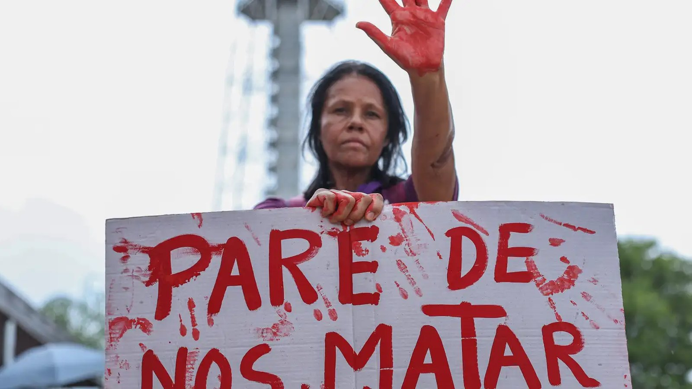

Câmara abre o plenário nesta quinta para palestra sobre enfrentamento à violência doméstica
A Câmara abre o plenário nesta quinta para palestra sobre enfrentamento à violência doméstica.
A pesquisa cruzou boletim de ocorrência com o calendário do futebol em cinco capitais. A conclusão é que dia de jogo virou fator de risco mensurável, e isso serve para planejar plantão.
Em 30 segundos · Modo de Leitura, formato original Santa Informa
Em dias de jogo, as lesões corporais contra mulheres sobem 28,9% e as ameaças, 27,4%.
Entre mulheres de 15 a 29 anos, o aumento chega a 44,4% tanto em ameaça quanto em lesão corporal.
É a 2ª edição do estudo do Fórum Brasileiro de Segurança Pública, lançado nesta terça (11). Os índices pioraram em relação ao levantamento anterior.
Santa CatarinaPublicada em Redação Santa Informa

O Fórum Brasileiro de Segurança Pública lançou nesta terça a segunda edição do estudo Futebol e violência contra a mulher. A pesquisa cruzou registros de ocorrência com resultados de partidas da Série A do Brasileirão, da Libertadores e da Sul-Americana em cinco capitais.
A conclusão é direta: dia de jogo é fator de risco comprovado para a violência doméstica.
Lesão corporal contra mulheres: +28,9% em dias de partida. Ameaça: +27,4%.
O grupo mais atingido é o das mulheres de 15 a 29 anos, com aumento de 44,4% em ameaças e em lesões corporais.
Em 2022, o mesmo Fórum publicou a primeira versão do estudo, com dados de 2015 a 2018. Comparando as duas, as ameaças subiram 3,7 pontos percentuais e as lesões físicas, 8,1 pontos percentuais.
A metodologia foi mantida, o que permite a comparação.
O próprio Fórum aponta o uso prático: se o dia de jogo é risco mensurável, o planejamento das forças de segurança pode reforçar plantão e unidade de atendimento nessas datas, em vez de distribuir o efetivo por igual.
A pesquisa também cobra os clubes, que são descritos como instituições com capacidade de influenciar comportamento, e não apenas participantes do espetáculo.
A cidade está em pleno Agosto Lilás. A Câmara promove palestra sobre o tema nesta quinta, com uma aspirante da Polícia Militar levando exatamente esse tipo de dado. E a Prefeitura mantém o Botão do Pânico integrado à Guarda Municipal.
180 é a Central de Atendimento à Mulher, 24 horas e gratuita. 190 é emergência.
O resumo de 30 segundos está no topo e a versão completa é o texto acima. Aqui ficam as três leituras da casa sobre o mesmo assunto.
Clara, a otimista
Transformar uma intuição antiga em número verificável é o que permite agir. Delegacia e patrulha podem ser reforçadas em data conhecida com antecedência, e o calendário do futebol é público.
E o estudo chega na semana em que Itapema discute o assunto no plenário da Câmara. Coincidência boa, porque dado fresco em debate local costuma render política pública.
Seu Prudêncio, o criterioso
Vale ler o que a pesquisa afirma e o que ela não afirma. Ela mostra correlação entre calendário e registro de ocorrência, e trata o jogo como marcador temporal de risco. Não diz que o futebol causa a violência, e a diferença importa.
Merece atenção o recorte geográfico. Foram cinco capitais, nenhuma delas em Santa Catarina. Aplicar o percentual a uma cidade de 86 mil habitantes no litoral seria esticar o dado além do que ele suporta.
Dito isso, o uso que o próprio Fórum sugere é o correto e barato: alocar efetivo e plantão conforme o calendário. Não depende de lei nova nem de orçamento extra, depende de escala.
Caco, o sarcástico
Aqui não tem piada. Fica só o que serve: 180, de graça, 24 horas, e não aparece na fatura do telefone.
Fontes: Agência Brasil, sobre a 2ª edição do estudo Futebol e violência contra a mulher, do Fórum Brasileiro de Segurança Pública.
A Câmara abre o plenário nesta quinta para palestra sobre enfrentamento à violência doméstica.
O Botão do Pânico integrado à Guarda Municipal, entre as ações do Agosto Lilás.
Santa Catarina lidera o país em indicadores de segurança.